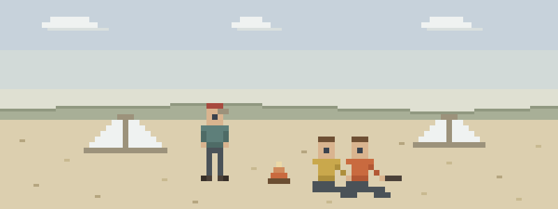

A summer’s worth in one week
- S’mores night. Two minutes after the cookout starts there are hives; five minutes in, a wheeze. Knowing which camper carries epi and where it lives is a before-dinner habit, not a during-emergency search.
- The buddy check comes up one short. A swimmer comes out of the lake limp and not breathing. Drowning is the one place the order changes: breaths first, then everything else.
- The climbing wall. A camper puts a hand out at the bottom of the wall and the wrist goes wrong. Splint it, check the fingers before and after, and keep the rest of the line moving.
The staff-week head start
Read these five before staff week:
- Anaphylaxis — epi first and early — plus the known-allergies roster habit
- Water & Lightning — breaths first — drowning changes the order
- Heat Illness — color wars in July put kids on the heat spectrum
- Musculoskeletal Injuries — FOOSH wrists are a camp season constant
- Patient Assessment — kids under-report — the system catches what they won’t say
Then pressure-test it
Interactive scenarios — one decision at a time, tempting mistakes included, debrief at the end:
- Find the Epi — anaphylaxis at the cookout, clock running
- Cool First — the field-game day that goes over the line
- Wiggle, Feel, Warm — the climbing-wall wrist, start to finish
The certification question, honestly. “Wilderness First Aid” isn’t a regulated credential. No government body defines what a WFA card means — it means whatever the company that printed it says it means. What counts in front of a patient is whether you can do the work. This course teaches the work, free, and issues a record of completion — not a certificate, and we won’t pretend otherwise. ACA accreditation and state camp regulations set real training requirements — certified first aid, CPR, lifeguards on the waterfront — and those stand exactly as written. This is arrive-prepared material, not a substitute for any of it. If nobody requires you to hold a card, what you need are the skills, not the laminate.
Bunk-time questions
Will this count toward my camp’s first aid requirement?
No — camps answer to ACA accreditation and state licensing, which name the certifications and providers they accept. Check with your camp director. What this does is make you the counselor who already knows why the protocols say what they say, which is worth more than it sounds like in week six.
What should I actually have memorized before campers arrive?
Two things cold: which of your campers carry epinephrine and exactly where it lives, and that drowning changes the order — breaths first, before compressions. Everything else can live in a reference card; those two have to live in you.
A camper says they’re fine — do I believe them?
Believe them twice. Kids under-report to stay in the game, avoid the nurse, or avoid the phone call home — so check now and check again in fifteen minutes, and let the second look make the call. A kid who’s trending quieter, paler, or clumsier is telling you the truth their mouth won’t.
What this is
Fifteen lessons, a 40-question knowledge check, sixteen practice scenarios, a printable field reference card, and a kit checklist. Free, no account, nothing recorded about you, source on GitHub. It teaches decision-making, not hands-on skill — practice the hands-on parts on a real, padded, complaining friend.
Others out there with a crowd of kids: outdoor education instructors, university rec staff & school trip coordinators · forest school educators & early-childhood nature guides · dog walkers & off-leash trail group leaders